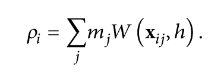
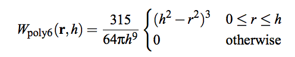
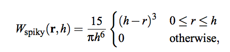
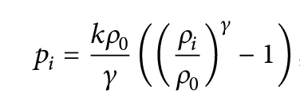
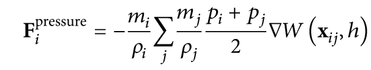
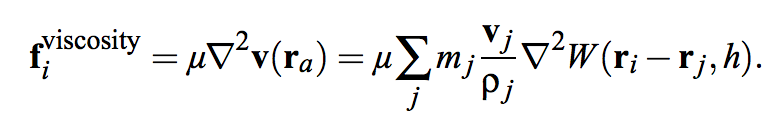
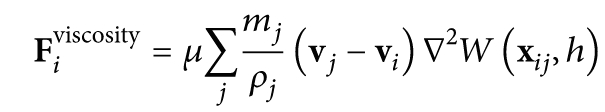

In this project, we successfully implemente the simulation of 3D fluid flow using a particle-based structure. Our method is mostly based on the Smooth Particles Hydrodynamics (SPH), a standard particle-based method for simulating the behavior of fluids. Each particle carries along some useful information about the fluid status, such as the position, density and velocity. And during the simulation, we iterate through each particle, calculate interaction between each other particle in a way that models the dynamics of a fluid. The Navier-Stokes Equation directs us to calculate the gravity force, pressure force and viscosity force for each fluid particle. And we further extend our implementation to include extra wind force, collision force, etc.
Our implementation maintains a loop to iterate through a particle list and compute the net force acting on each particle, and finally apply the verlet integration to update the velocity and position of each particle. The general pseudocode is shown below. Instead of computing the new positions and then correct them (if necessary) as suggested in Particle Based Fluids, we compute all the "constraints" and ensure that our computed new position for particles are all "valid and reasonable".
for each simulation step do:
for each particle do:
find neighbor particles that are closed enough it
store the list of neighbor particles
for each particle do:
compute density and pressure of the particle
computation will use the neight particles list
for each particle do:
based on the newly computed density and pressure
compute the pressure force computation
compute the viscosity force computation
compute other force (gravity)
sum over all forces acting on the particle
for each particle do:
verlet time integration to udpate velocity and position
We are able to simulate the fluid flow using a particle-based system because the use of particle structure simplifies the stationary grid-based system, as we assume each particle has constant mass and thus guarantee mass conservation. It further simplifies the Navier-Stokes equations, eliminating some complex terms such as the convective term "v*∇v". Thus, using the particle based system, there are only three terms left for the Navier-Stokes equations: force = -∇p + ρg + μ∇2v.
The first thing to do, at the beginning of each iteration, is to look for the neighboring particles. Neighbor particles are defined to be the particles that are closed enough to our current particle. They are crucial because they contribute to the pressure force on the particles due to the incompressibility of fluid. We iterate through all other particles and compute the distance between each one with our current particle. If the distance is shorter than our self-defined upperbound, then we find a neighbor particle.
Each particle owns a vector
To be incompressible, the fluid particles must maintain a relatively constant density within each small region. To do this, we must assure that the new position of each particle is such that the density of any region a particle resides in is as closed to rest density as possible.
To do this, we first compute the current density of each particle. This computation is done by the SPH density estimator, which uses a particle's position and its neighbor particles positions to determine the density field this particle experiences using a kernel function. The equation is shown below:

where m denotes particle mass, which is always 1 in our particle-based repesentation. W is a weight kernal function and h is the cutoff distance used in defining neighbor particles.
We first use the cubic spline kernel function (also known as the poly6 kernel) to estimate the density. This kernel is efficient in distance computation, due to the use of r2 term. It works fine in density computation, but the limitation of this kernel arises in estimating pressure, that particles tend to build clusters under high pressure. As particles get very close to each other, the repulsion force vanishes because the gradient of the kernel approaches zero at the center. With a few tries, we end up using Debrun's spiky kernel, which generates a non vanishing gradient near the center and provides better stability.


Once we have the estimated density for each particle, we can then calculate its pressure field.

where pi is the pressure at particle i, k is a stiffness parameter to allow small density fluctuation, ρ0 is the reference density, and γ is a user defined value which is usually set to 1 for SPH
Finally, we can use the equation below to calculate the pressure force for each particle:

where ΔW is the gradient of spiky kernel function.
only pressure force applied via spline kernel
only pressure force applied via spiky kernel
Cubic Spline Kernel and Debrun's Spiky Kernel Function [Pressure Force only]
unstable particles with spline
stable particles with spiky
Cubic Spline Kernel and Debrun's Spiky Kernel Function [With Gravity and Viscosity]
The SPH rule for viscosity again yields asymmetric forces:

where μ is the viscosity of the fluid and vi is the velocity of particle i.
because the velocity field varies from particle to particle. We notice that the viscosity forces are only dependent on velocity differences between two particles and not on absolute velocities, we try to symmetrize the viscosity forces by using velocity differences:

Our simulator supports external forces such as gravity, collision forces and forces caused by user interaction (such as wind forces and bumping forces). These forces are applied directly to the some involved particles without the use of SPH.
When particles collide with objects such as the cylinder in our examples, we simply push them out of the object and recalculate its velocity. More specifically, we reflect the velocity component that is perpendicular to the collision surface point.
After we have computed the net force exerted on one particle, we can then use the Newton's Law to compute the velocity of the particle:
Force = mass * acceleration
Velocitynext = Velocitycurrent * acceleration * dt
Positionnext = Positioncurrent + Velocitycurrent * dt + 0.5 * acceleration * dt2
where the mass for each particle is assumed to be always 1.
wind
wind with bump
wind with cylinder
small bump
large bump
object
add flow
color for direction
specular for velocity
shiness for velocity
-->When we first start this project, it took some work to find the correct matching coeffiences for different force to make it look like natural fluid. However, if we abjust some coeffiences, it can turn out to be some other fluids or other movements.Therefore, abjustment on coeffience can be applied to generalize this project to simulate a variety of fluids and movements.
If we increase the pressure force coeffiences, we can get something looks like the fluid is explored internally rather than simply naturally falling down.
increase pressure ratio for explosion
Peijie Li: research, building up particles structure system, internal force calculation, verlet update, color interaction, web report
Sharon LI: building up particles structure and system, external force calculation, pressure and density calculation, wind and object interaction, web report